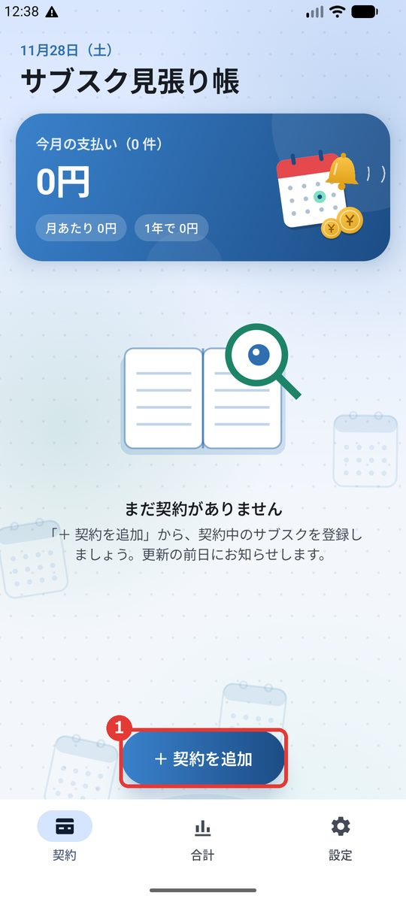
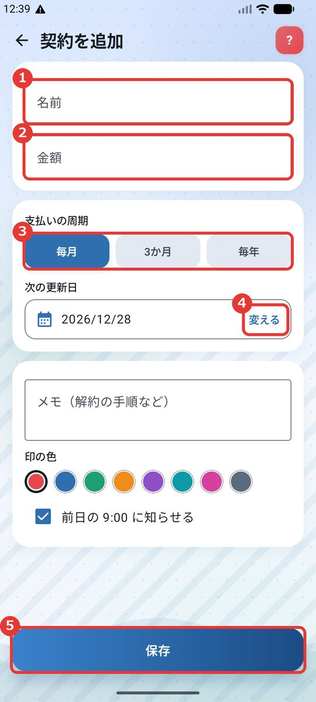
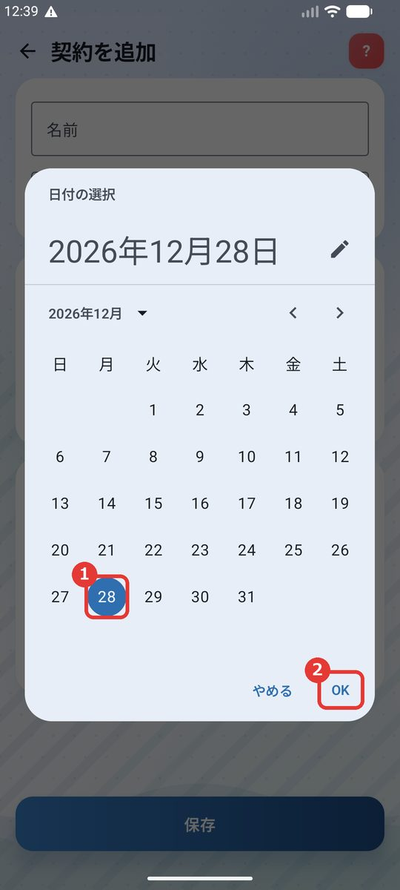
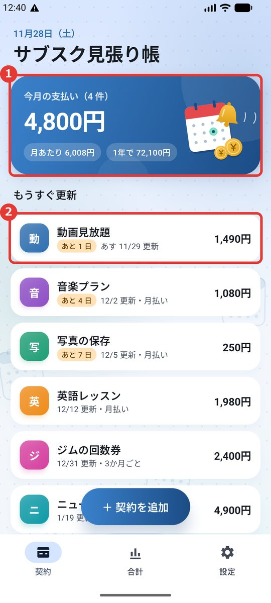
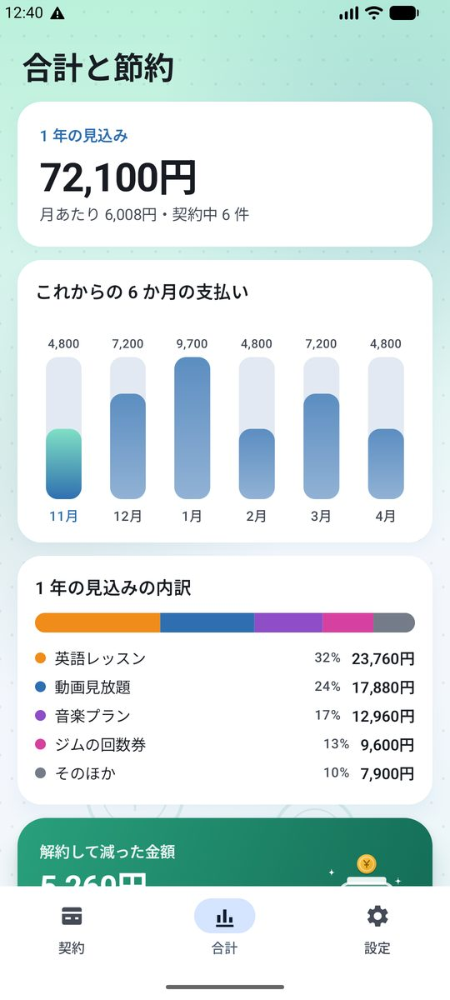
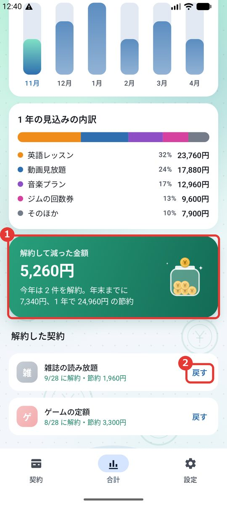
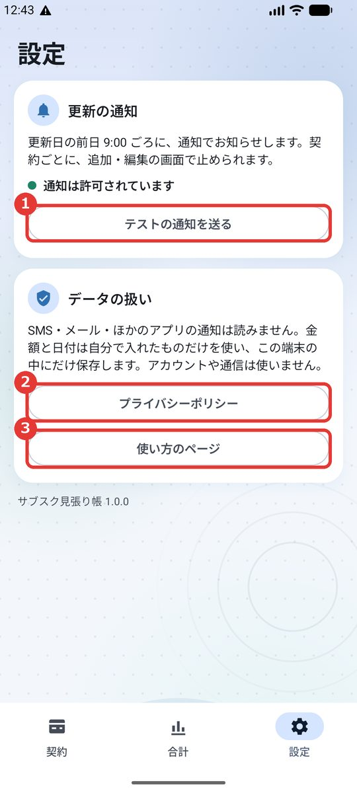

サブスク見張り帳 の紹介ページへ戻る
サブスク見張り帳 の使い方
サブスク見張り帳（Subscription Keeper）は、契約中のサブスクの金額と次の更新日を自分で入れておくと、更新の前日に通知で知らせるアプリです。月・年の合計と、解約して減った金額も見られます。
この説明は バージョン 1.0.0 の画面に合わせています（2026年11月28日）。画面はこれから変わることがあります。
- はじめに
- 契約を登録する
- 一覧を見る・直す
- 更新の前日の通知
- 合計と節約
- 解約した・削除する
- 設定
- よくある質問
1. はじめに
- アプリを開くと「契約」の画面が出ます。下の「契約」「合計」「設定」で画面を切り替えます
- はじめて契約を保存したとき（Android 13 以上）、通知の許可を聞かれます。前日に知らせるために「許可」を押します
アカウントの登録もインターネットも要りません。入れた情報はこの端末の中だけに保存されます。
2. 契約を登録する

1下の「＋ 契約を追加」を押します

1名前 21 回の金額 3支払いの周期 4次の更新日を「変える」 5最後に「保存」

1次に支払う日を押し、2「OK」を押します
- 「＋ 契約を追加」を押します
- 「名前」（例：動画見放題）と、1 回に払う「金額」（円）を入れます
- 「支払いの周期」を「毎月」「3か月」「毎年」から選びます
- 「次の更新日」の「変える」を押し、次に支払う日を選んで「OK」を押します
- 必要なら「メモ（解約の手順など）」と「印の色」を入れます。「前日の 9:00 に知らせる」は、知らせが要らない契約だけ外します
- 「保存」を押します
- 月末の契約：31 日に払う契約は、30 日までの月は月末に、31 日のある月はまた 31 日になります。2 月 29 日の年払いは、うるう年でない年は 2 月 28 日になります
- 過ぎた日を選んだときは、保存するときに今日より後の更新日まで進めます
- 更新日が過ぎると、周期の分だけ自動で次の更新日に進みます
3. 一覧を見る・直す

1今月の支払い・月あたり・1 年の合計 2契約を押すと、直す画面が開きます
- 上の札に、今月の支払い（今月すでに払った分も含む）と件数、月あたり、1 年での金額が出ます
- 「もうすぐ更新」には、契約中のものが次の更新日の近い順に並びます。7 日以内のものには「あと N 日」、今日のものには「今日」の印が付きます
- 契約を押すと「契約を編集」の画面が開きます。直したら「保存」を押します。左上の「←」で、保存せずに戻ります
4. 更新の前日の通知
- 次の更新日の前日の 9:00 に「あすは『○○』の更新日です」と通知が届きます。続けるか、やめるかを決める目安にしてください
- 知らせる予約は、9:00 をもう過ぎているときは、その回はしません（例：あすの更新を、今日の 9:00 より後に登録したとき）
- 通知が届かないときは、7. 設定で通知が許可されているか確かめ、「テストの通知を送る」で試してください。省電力の設定によっては、時刻が少し遅れることがあります
5. 合計と節約

1 年の見込み、これからの 6 か月の支払い、1 年の見込みの内訳

1解約して減った金額 2「戻す」で契約中に戻せます
- 1 年の見込み：契約中のものを 1 年続けたときの金額と、月あたりの金額
- これからの 6 か月の支払い：月ごとの支払いの棒グラフ。今月は色が変わります
- 1 年の見込みの内訳：金額の大きい順。多いときは「そのほか」にまとめます
- 解約して減った金額：解約した後に来るはずだった更新日の金額の合計。今年解約した件数と、年末までと 1 年あたりの節約も出ます
6. 解約した・削除する
- 一覧で契約を押して「契約を編集」の画面を開きます
- サービスを解約したら「解約した」を押します。一覧から外れて「合計」の画面の「解約した契約」に移り、節約できた金額に足されます
- 間違えて登録した記録を消すときは「削除」を押し、確かめの画面で「削除」を押します
- 「解約した」はアプリの中の記録だけです。サービスの解約は、そのサービスのサイトやアプリで行ってください（解約の手順をメモに残しておくと便利です）
- 「解約した契約」の「戻す」を押すと、契約中に戻ります
7. 設定

1テストの通知を送る 2プライバシーポリシー 3使い方のページ（このページ）
- 更新の通知：通知が許可されているかが出ます。許可されていないときは「通知を許可する」か「通知の設定を開く」を押します。「テストの通知を送る」で、届き方を確かめられます
- データの扱い：プライバシーポリシーと、この使い方のページを開けます
- いちばん下に、アプリのバージョンが出ます
8. よくある質問
カードの明細やメールから自動で読み取れますか？
いいえ。SMS・メール・ほかのアプリの通知は読みません。金額と日付は自分で入れてください。そのぶん、ほかの情報を見られる心配がありません。
データはどこに保存されますか？
この端末の中だけです。運営者のサーバーには送りません。アプリを削除すると消えます。機種変更のときは、Android のバックアップ（Google アカウントへのバックアップ）をオンにしていれば、引き継がれることがあります。
金額が変わったときは？
一覧で契約を押し、「金額」を直して「保存」を押してください。
全部消したいときは？
アプリを削除するか、端末の設定でアプリのデータを消去してください。
詳しくはプライバシーポリシーをご覧ください。
お問い合わせ
DNGG-studio：dngg.studio@gmail.com